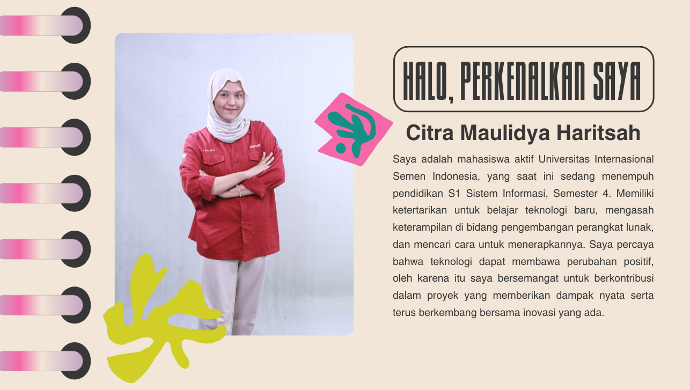
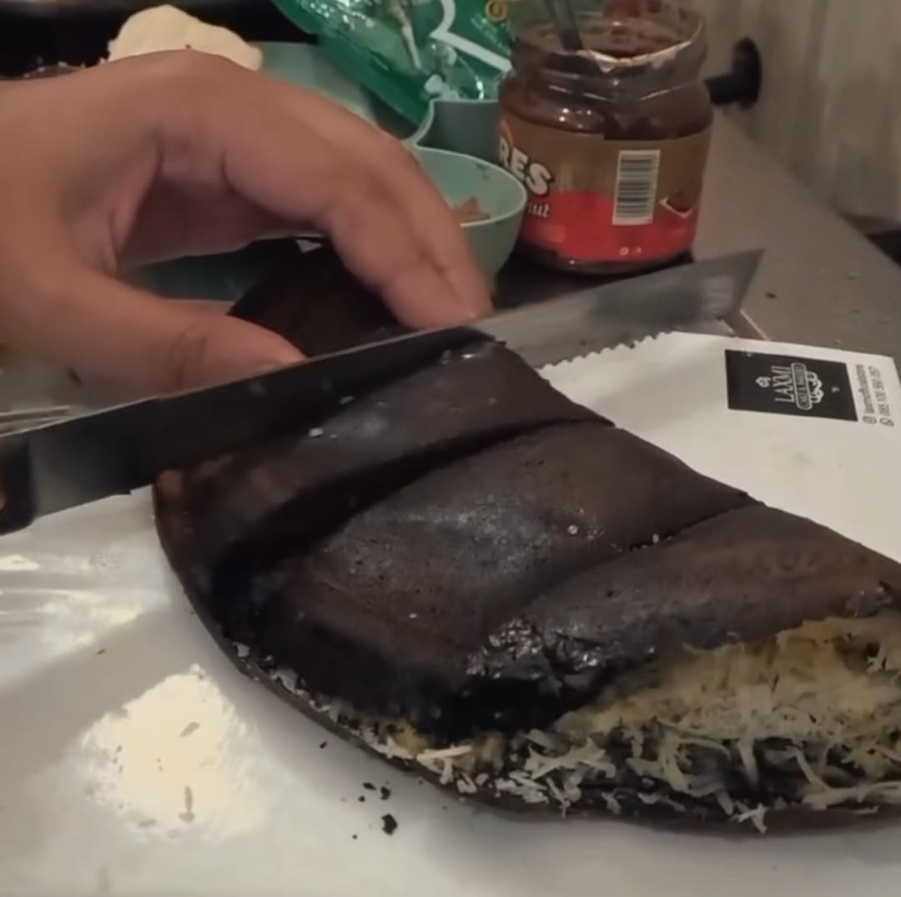

About Me

Galeri Hobi



My Projects

Project 1: Design Mobile - Fuara Persjab
Fuara Persjab adalah aplikasi manajemen stok dan keuangan untuk pelaku UMKM. Aplikasi ini mempermudah pencatatan stok masuk dan keluar, memantau jumlah produk, serta menyajikan laporan keuangan dan profit secara berkala.

Project 2: UI/UX Design Mobile - Plan Plate
Plan Plate adalah aplikasi perencana menu harian yang membantu pengguna dalam mengatur daftar makanan sehari-hari agar lebih hemat waktu dan biaya.
Multimedia
Vidio Profil dosen Sistem Informasi UISI
Formulir
Jika ingin menghubungi saya, silahkan isi formulir dibawah ini.